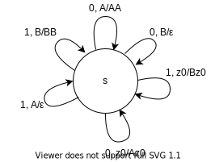
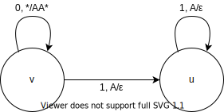
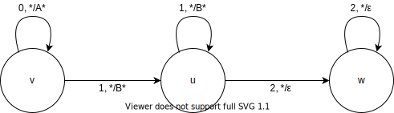
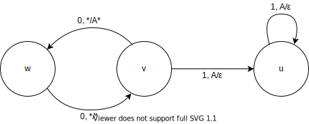
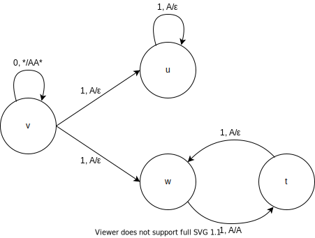
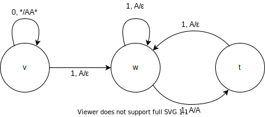
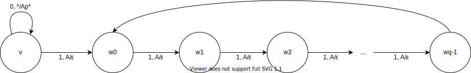
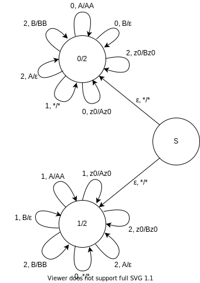
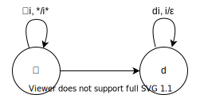

187.
Постройте МП-автомат для языка слов, где число нулей равно числу
единиц.

188. Постройте МП-автомат
для языка \(0^n1^{2n}\)

189. Постройте
МП-автомат для языка \(0^n1^m2^{n+m}\)

190. Постройте МП-автомат
для языка \(0^{2n}1^{n}\)

191. Постройте
МП-автомат для языка \(0^{n}1^{2n}\cup
0^{n}1^{n}\)

192. Постройте
МП-автомат для языка \(0^{n}1^{m}, m\in[n,
2n]\)

193.
Докажите, что для любых \(p\) и \(q\) существует МП-автомат для языка слов
\(0^n1^m\), где \(n/m=p/q\)

\(T=\{w_0\}, s=v\)
194.
Постройте автомат с магазинной памятью для языка слов над алфавитом
\(\{0,1,2\}\), которые содержат равное
число двоек и равное число единиц, или равное число двоек и равное число
нулей.

195.
Рассмотрим список слов \(A = \{\alpha_1,
\alpha_2, \ldots, \alpha_n\}\) над алфавитом \(\Sigma\). Введем \(n\) новых различных символов \(d_1, d_2, \ldots, d_n\). Рассмотрим алфавит
\(\Sigma' = \Sigma \cup \{d_1, d_2,
\ldots, d_n\}\). Рассмотрим язык списка \(A\), обозначаемый как \(L_A\), в который входят все слова вида
\(\alpha_{i_1}\alpha_{i_2}\ldots\alpha_{i_k}d_{i_k}d_{i_{k-1}}\ldots
d_{i_1}\). Докажите, что для любого списка \(A\) язык \(L_A\) является контекстно-свободным.

196.
Докажите, что дополнение к языку списка \(L_A\) является контекстно-свободным для
любого списка \(A\).
\(T=\{t\}\)
197.
Можно неправильно определить язык списка \(A =
\{\alpha_1, \alpha_2, \ldots, \alpha_n\}\) из предыдущего
задания, составив его из слов вида \(\alpha_{i_1}\alpha_{i_2}\ldots\alpha_{i_k}d_{i_1}d_{i_2}\ldots
d_{i_k}\). Докажите или опровергните, что при таком неправильном
определении язык списка все еще будет конткстно-свободным для любого
списка \(A\).
\(\sphericalangle A = \{0,1,2\}, d_1=3,
d_2=4, d_3=5\)
\(0^n12^n3^n45^n\in L_A\)
Докажем не КС по лемме о разрастании.
Если раскачивается только одна сторона, то очевидно \(\not\in L_A\)
Если раскачиваются обе стороны, то \(\#_3\not=\#_0\).
198.
Предложите алгоритм проверки, что МП-автомат допускает заданное
слово.
Умножим состояния на \(\{1\ldots
n\}\), оставим только те, которые переходят по искомому слову,
получим МПА \(P'\), \(L(P')=P'\cap\{w\}\), проверим
непустоту языка через достижимость принимающего состояния, см. 199.
Проблема: эпсилон-циклы дают бесконечный цикл. Решение: не ходить по
переходам, по которым уже прошли ровно в таком же состоянии стека.
Проблема: цикл \(\varepsilon, *\to
A*\) дает бесконечное множество различных состояний. Решение:
если путь до вершины, то есть путь с переходами $$
На нерке есть алгоритм получения КСГ из МП-автомата, КЯК определяет
для КСГ.
199.
Назовем состояние МП-автомата бесполезным, если автомат не может перейти
в него ни при каком входном слове. Предложите алгоритм проверки
состояния МП-автомата на бесполезность.
Построим НКА достижимости по МПА (с допуском по пустому стеку):
\(\langle \Sigma, \Gamma, Q, q_0\in Q,
\delta\rangle\xrightarrow[построение]{}\langle Q, \Gamma, \delta_n,
q_0\rangle\)
В этом НКА достижимость состояния \(q\) по слову \(\alpha \Leftrightarrow\) достижимость \(q\) в МПА, имея при достижении стек \(\alpha\). Тогда ответом на запрос будет
достижимость \(q\) в НКА, что мы умеем
делать.
Сконвертим переходы МПА в переходы вида \((q, \varepsilon)\to (q', a)\) или \((q, a)\to (q', \varepsilon)\), т.е. при
каждом переходе либо добавляется символ в стек, либо удаляется.
Переходы с добавлением в стек (первый for) очевидны.
while: делаем пока есть что делать
Если мы можем прийти в \(q\) из
\(q''\) таким образом, что на
стеке сверху будет \(a\) и есть переход
в МПА \(q\to q'\), удаляющий \(a\), то есть переход \(q''\to q'\) без изменения
стека.
200.
Предложите алгоритм проверки, что МП-автомат допускает хотя бы одно
слово, содержащее заданное в качестве подстроки.
Сконвертим в КСГ. Запустим CYK, получим множество нетерминалов, из
которых можно получить \(w\). Проверим
достижимость из \(S\) всех таких
нетерминалов, если хотя бы один достижим, да.
algo(PDA, w): CFG = PDA.toCFG() dp = CYK(CFG, w)for A ∈ Q:if dp[A][1][n] and CFG.reachable(A):return truereturn false
201.
Предложите алгоритм проверки, что МП-автомат допускает бесконечное число
слов.
Конверт в КСГ, проверка в ней.
202. Замкнутость КС по
изморофизму.
Возьмем МПА к \(L\), вместо перехода
по \(c_i\) сделаем \(|f(c_i)|\) переходов, которые идут по этой
строке.
203. Замкнутость КС по
обратному изморофизму.
Состояния \(Q\times S, S=\{suffix(f(a))\ |\
\forall a\in\Sigma\}\). Будем хранить во втором элементе
состояния как в буффере какой-то необработанный суффикс \(f(a)\), который скармливается МПА для \(L\).
Восполнение: \((q, \varepsilon), w, X \to
(q, f(w)), X\)
Кормление: \(q, a, X \to q', Y
\Rightarrow (q, ab), \varepsilon, X \to (q', b), Y\)